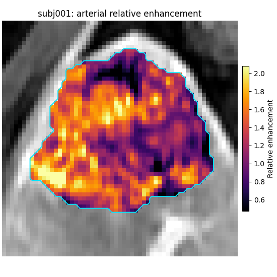
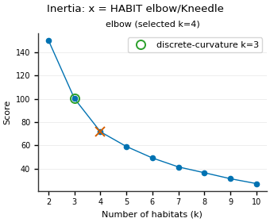
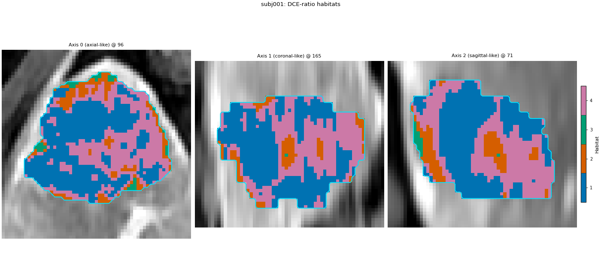
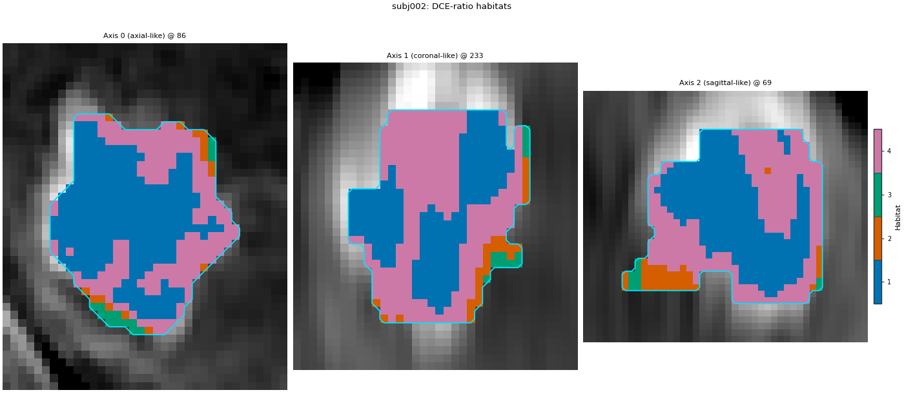

Note
Go to the end to download the full example code.
Your own feature extractor as a plugin#
Background. Built-in voxel extractors cover intensities, formulas,
kinetics and texture. When your study needs its own voxel-level
computation (here, liver DCE enhancement and wash-out ratios), you
write a small extractor class, register it under a name, and use that
name in a Spec exactly like a built-in one. The same class can later
be shipped as a pip-installable package, so other groups use it by name
without copying code or editing HABIT.
Purpose. You will write a dce_hemodynamics extractor, register
it, call it on one subject to see an enhancement map, run the two-step
analysis with it as the extract stage, and see how to declare it as
an entry point so that HABIT finds it after pip install.
When to use. When the columns you want are not a built-in extractor and a formula string (Enhancement patterns) is not enough, or when you want to share a feature definition as a package.
Analysis definition. The approved two-step definition with one
deviation: the extract stage is the custom dce_hemodynamics
extractor (three ratio maps from the four DCE phases) instead of the
four raw intensities. Subject-level winsorize + z-score, 30 k-means
supervoxels, cohort-level 10-bin binning, k-means 2..10 habitats by
elbow, nearest-centroid assignment and seed 0 are unchanged; the page
fits on subj001 + subj002 and keeps only the volume quantify stage.
Key terms. Full definitions are on Concepts.
voxel feature extractor – an object with a
specproperty and a__call__(subject)that returns one row per ROI voxel, one column per feature (aVoxelFeatureField).registry – HABIT’s lookup table from a name (
"dce_hemodynamics") to a component class;Spec("dce_hemodynamics", ...)finds the class through it.entry point – a standard Python packaging hook: your package’s
pyproject.tomlnames a module under a group, and HABIT imports it on request, which runs your registration decorator.relative enhancement / wash-out – signal gain over the unenhanced phase, and signal loss after the arterial phase, each as a ratio.
Load the cohort#
Four DCE phases, ROI LAP. Two subjects define the habitats.
sphinx_gallery_thumbnail_number = 1
from pathlib import Path
from typing import Optional, Sequence, Tuple
import matplotlib.pyplot as plt
import numpy as np
from habit.contracts import Subject, VoxelFeatureField, cohort_from_directory
from habit.datasets import fetch_demo
from habit.plugins import load_plugins
from habit.execution import backend_from_policy
from habit.recipes import Study
from habit.spec import HabitatSpec, Spec, Stage
from habit.spec.policy import RunPolicy
from habit.viz import (
plot_cluster_validation_from_report,
plot_habitat_overlay,
plot_voxel_texture_slice,
)
from habit.voxel_features import (
VoxelFeatureExtractorRegistry,
aligned_image,
build_voxel_field,
roi_voxels,
)
# Change DATA / MODALITIES / ROI to your preprocessed layout.
DATA = fetch_demo()
# Unenhanced, late-arterial, portal-venous, delayed (demo pack keys).
MODALITIES = ("pre_contrast", "LAP", "PVP", "delay_3min")
ROI = "LAP"
cohort = cohort_from_directory(DATA, modalities=MODALITIES, roi=ROI)
train = cohort[:2]
Path("out").mkdir(exist_ok=True)
HABIT demo data (cached)
DATA (preprocessed root): C:\Users\dongm\.habit_data\demo-data-v1\preprocessed
On-disk inventory of this folder:
subjects (5): subj001, subj002, subj003, subj004, subj005
image series: LAP, PVP, delay_3min, pre_contrast
mask keys: LAP, PVP, delay_3min, pre_contrast
example image: images/subj001/delay_3min/WATER__BH_Ax_LAVA_Flex_3min_Series0012.nrrd
example mask: masks/subj001/delay_3min/WATER__BH_Ax_LAVA_Flex_10min_Series0017_mask.nrrd
Your own data must use the same folder tree (change IDs / series names):
DATA/
images/<subject_id>/<modality>/<one image file>
masks/<subject_id>/<roi>/<one mask file>
Then load it with the same call the demos use:
cohort = cohort_from_directory(DATA, modalities=("LAP",), roi="LAP")
Swap DATA / modalities / roi to match your tree. Mask key is often the
same as one image series (here LAP).
Write and register the extractor#
The class needs two things: a spec property (name + parameters,
recorded in the provenance of every result built on it) and a
__call__ that takes ONE subject and returns a voxel feature field.
The decorator puts the class in the voxel feature registry under the
name "dce_hemodynamics"; from then on a Spec can refer to it.
Three public helpers do the bookkeeping:
roi_voxels– the ROI mask on the image grid (it resamples the mask when mask and image geometry differ, as in the demo), the in-ROI selector and the voxel coordinates.aligned_image– one phase read on that same grid.build_voxel_field– wraps the value matrix with its grid positions and the spec, so the result can be drawn back into the image and traced.
DCE_FEATURES: Tuple[str, ...] = (
"relative_enhancement_lap", # (LAP - pre) / pre
"relative_washout_pvp", # (LAP - PVP) / (LAP - pre)
"relative_washout_delay", # (LAP - delay) / (LAP - pre)
)
@VoxelFeatureExtractorRegistry.register("dce_hemodynamics")
class DCEHemodynamics:
"""
Per-voxel DCE enhancement and wash-out ratios from four liver phases.
Args:
phases: Image keys in the order unenhanced, arterial, portal,
delayed.
roi: Mask key of the ROI.
eps: Small constant added to denominators so a zero signal does
not divide by zero.
"""
def __init__(
self,
phases: Sequence[str] = MODALITIES,
roi: Optional[str] = None,
eps: float = 1e-8,
) -> None:
if len(phases) != 4:
raise ValueError("dce_hemodynamics expects four phases: unenhanced, arterial, portal, delayed.")
self.phases: Tuple[str, ...] = tuple(phases)
self.roi = roi
self.eps = float(eps)
@property
def spec(self) -> Spec:
"""Return the name and parameters of this extractor, for provenance."""
return Spec(
"dce_hemodynamics",
{"phases": list(self.phases), "roi": self.roi, "eps": self.eps},
)
def __call__(self, subject: Subject) -> VoxelFeatureField:
"""
Compute the three DCE ratio columns for every ROI voxel.
Args:
subject: One subject holding the four phases and the ROI mask.
Returns:
A voxel feature field with one row per ROI voxel and the three
columns named in ``DCE_FEATURES``.
"""
# ROI mask aligned to the image grid, its selector, and coordinates.
mask, inside, voxel_index = roi_voxels(subject, self.roi)
# Read each phase on the mask's grid and keep only ROI voxels, so
# row i of every phase is the same voxel.
pre, lap, pvp, delay = (
aligned_image(subject, phase, mask, owner="dce_hemodynamics")[inside].astype(np.float64)
for phase in self.phases
)
# Arterial gain over the unenhanced signal (the enhancement ratio),
# and the fraction of that gain lost by the portal / delayed phase.
arterial_gain = lap - pre
values = np.column_stack(
[
arterial_gain / (pre + self.eps),
(lap - pvp) / (arterial_gain + self.eps),
(lap - delay) / (arterial_gain + self.eps),
]
)
return build_voxel_field(subject, mask, voxel_index, DCE_FEATURES, values, self.spec)
print("registered voxel extractors:", VoxelFeatureExtractorRegistry.available())
registered voxel extractors: ('concat', 'dce_hemodynamics', 'expression', 'kinetic', 'local_entropy', 'raw', 'voxel_radiomics')
Call it on one subject#
The extractor is an ordinary object: build it by name through the
registry (the same lookup a Spec uses) and call it on one subject.
subject = train[0]
extractor = VoxelFeatureExtractorRegistry.create("dce_hemodynamics", phases=list(MODALITIES), roi=ROI)
dce_field = extractor(subject)
print(dce_field.feature_frame().describe().round(3))
fig = plot_voxel_texture_slice(
dce_field,
feature="relative_enhancement_lap",
anatomy=subject.image("LAP"),
roi_mask=subject.mask(ROI),
cmap="inferno",
axis=0,
crop_to="roi",
feature_label="Relative enhancement",
title=f"{subject.subject_id}: arterial relative enhancement",
)
fig.savefig("out/feature_plugin_enhancement.png", dpi=150, bbox_inches="tight")
plt.show()

relative_enhancement_lap relative_washout_pvp relative_washout_delay
count 34694.000 34694.000 34694.000
mean 1.331 0.076 0.251
std 0.388 0.473 0.524
min -0.017 -20.684 -22.421
25% 1.053 -0.089 0.077
50% 1.332 0.168 0.346
75% 1.605 0.346 0.536
max 3.238 43.429 54.429
F:\work\habit_project\habit\viz\voxel_texture.py:1019: UserWarning: Display geometry conflict: image/anatomy direction does not match mask/label direction. Using the mask/label direction so coronal/sagittal superior-up follows the labelled anatomy. Pass direction= to override.
direction, spacing = resolve_display_geometry(
Use it by name in a Spec#
Only the extract stage names the new component. The ratios can
have long tails (a small arterial gain in the denominator), so the
subject-level winsorize step matters here: it clips each column to
the patient’s own 1st..99th percentile before min-max puts the three
columns on the same 0..1 scale.
spec = HabitatSpec(
name="dce_hemodynamics_two_step",
stages=(
# extract: the three DCE ratios from the registered extractor.
Stage("extract", Spec("dce_hemodynamics", {"phases": list(MODALITIES), "roi": ROI})),
# subject-level: clip to each patient's own 1st..99th percentile.
Stage("preprocess", Spec("winsorize", {"winsor_limits": [0.01, 0.01]})),
# subject-level: rescale each column to 0..1 per patient.
Stage("preprocess2", Spec("zscore")),
# partition: 30 supervoxels per tumour.
Stage("partition", Spec("kmeans", {"n_supervoxels": 30})),
# pool: stack both training subjects' supervoxels.
Stage("pool", Spec("pool")),
# cohort-level: 10 equal-width bins, edges from the training rows.
# fit: one k-means for the cohort, 2..10 habitats, elbow rule.
Stage(
"fit",
Spec("kmeans", {"min_habitats": 2, "max_habitats": 10, "validation": "elbow", "n_init": 10}),
),
Stage("assign", Spec("nearest_centroid")),
Stage("volume", Spec("volume")),
),
random_seed=0,
)
result = Study(spec).fit_predict(
train,
backend=backend_from_policy(
RunPolicy(backend="serial", on_subject_failure="continue")
),
)
model = result.habitat_model
print(model.summary())
# HABIT validation ``elbow`` is the same rule as ``kneedle``. It runs
# ``KneeLocator`` on k-means inertia (within-cluster sum of squares),
# curve convex, direction decreasing (Satopaa, Albrecht, Irwin, and
# Raghavan, 2011, Finding a "Kneedle" in a Haystack, IEEE ICDCS).
# Normalize k and inertia to the unit square, draw the chord from the
# first point to the last, and take the k farthest from that chord; a
# smooth curve often places this knee to the right of the bend a person
# sees. Literature "elbow" means inspecting within-cluster dispersion
# versus k (Thorndike RL, 1953, Who belongs in the family?, Psychometrika
# 18(4):267-276) — not a second-difference formula. The discrete-curvature
# elbow (visual elbow, computed) maximizes the second difference of
# inertia (HABIT pre-v1.0 elbow); it is not a Thorndike formula. The
# habitat map keeps the Kneedle K; other Ks are only in the table below.
# Full comparison: :doc:`/auto_examples/03_clustering/plot_03_clustering_algorithm`.
report = model.preprocessing_state["selection_report"]
candidates = [int(k) for k in report["candidates"]]
inertia = np.asarray(report["scores"][report["methods"][0]], dtype=float)
def discrete_curvature_elbow_k(cluster_range, inertia_scores):
"""Return k maximizing the second difference of inertia (pre-v1.0 elbow)."""
values = np.asarray(inertia_scores, dtype=float)
cluster_range = [int(k) for k in cluster_range]
if values.size < 3:
return int(cluster_range[int(np.argmin(values))])
return int(cluster_range[int(np.argmax(np.diff(values, n=2))) + 1])
k_kneedle = int(model.n_habitats)
k_discrete = discrete_curvature_elbow_k(candidates, inertia)
from habit.habitat_model import KMeansHabitatModelFitter
_k_table = {"elbow_kneedle": k_kneedle, "discrete_curvature_elbow": k_discrete}
for _name in ("silhouette", "calinski_harabasz", "davies_bouldin"):
_fitter = KMeansHabitatModelFitter(
min_habitats=2, max_habitats=10, validation=_name, n_init=10
)
_fitter.set_random_state(0)
_k_table[_name] = _fitter.fit(result.units, cohort=train).n_habitats
print("K by criterion:")
for _name, _k in _k_table.items():
print(f" {_name}: {_k}")
# Plot every supported k-means criterion (skip gap: expensive on this page).
_criteria = ("elbow", "silhouette", "calinski_harabasz", "davies_bouldin")
_vote = KMeansHabitatModelFitter(
min_habitats=2, max_habitats=10, validation=list(_criteria), n_init=10
)
_vote.set_random_state(0)
_vote_report = dict(
_vote.fit(result.units, cohort=train).preprocessing_state["selection_report"]
)
_vote_report["selected"] = {
"elbow": k_kneedle,
"silhouette": _k_table["silhouette"],
"calinski_harabasz": _k_table["calinski_harabasz"],
"davies_bouldin": _k_table["davies_bouldin"],
}
fig = plot_cluster_validation_from_report(
_vote_report,
title="K criteria (elbow panel: x = Kneedle)",
)
fig.axes[0].plot(
k_discrete,
float(inertia[candidates.index(k_discrete)]),
marker="o",
markersize=8,
markerfacecolor="none",
markeredgecolor="C2",
markeredgewidth=1.4,
linestyle="none",
label=f"discrete-curvature k={k_discrete}",
)
fig.axes[0].legend(loc="best", fontsize=8)
fig.savefig("out/feature_plugin_elbow.png", dpi=150, bbox_inches="tight")
plt.show()

Cohort.map[_ComputeUnits]: 0%| | 0/2 [00:00<?, ?it/s]
Cohort.map[_ComputeUnits]: 50%|█████ | 1/2 [00:02<00:02, 2.02s/it]
Cohort.map[_ComputeUnits]: 100%|██████████| 2/2 [00:03<00:00, 1.66s/it]
Cohort.map[_ComputeUnits]: 100%|██████████| 2/2 [00:03<00:00, 1.66s/it]
Cohort.map[_AssignPrecomputedUnits]: 0%| | 0/2 [00:00<?, ?it/s]
Cohort.map[_AssignPrecomputedUnits]: 50%|█████ | 1/2 [00:00<00:00, 3.02it/s]
Cohort.map[_AssignPrecomputedUnits]: 100%|██████████| 2/2 [00:00<00:00, 2.91it/s]
Cohort.map[_AssignPrecomputedUnits]: 100%|██████████| 2/2 [00:00<00:00, 2.91it/s]
HabitatModel kmeans-3432f3b65bfec11a
habitats : 4
features (3) : relative_enhancement_lap, relative_washout_pvp, relative_washout_delay
defining cohort : n=2
modalities : pre_contrast, LAP, PVP, delay_3min
cohort digest : cc1b16a34cc7478d...
produced by : habitat_model_fitter.kmeans
habit version : 3.0.0
random seed : 0
preprocessing state: inertia, selection_report, validation
K by criterion:
elbow_kneedle: 4
discrete_curvature_elbow: 3
silhouette: 2
calinski_harabasz: 2
davies_bouldin: 2
Habitat maps and what they mean#
The centroid columns are the extractor’s feature names, in bin units 0..9 (after subject-level scaling and cohort-level binning).
centroids = np.asarray(model.centroids)
print("features:", list(model.feature_names))
for hid, row in enumerate(centroids, start=1):
print(f"habitat {hid}: " + ", ".join(f"{v:.2f}" for v in row))
table = result.features.frame.set_index("subject")
fraction_columns = [c for c in table.columns if c.endswith("_volume_fraction")]
print(table[fraction_columns].round(3).to_string())
for one, one_map in zip(train, result.habitat_maps):
fig = plot_habitat_overlay(
one.image("LAP"),
one_map,
title=f"{one.subject_id}: DCE-ratio habitats",
crop_to="labels",
)
fig.savefig(f"out/feature_plugin_habitats_{one.subject_id}.png", dpi=150, bbox_inches="tight")
plt.show()


features: ['relative_enhancement_lap', 'relative_washout_pvp', 'relative_washout_delay']
habitat 1: 0.94, 0.45, 0.39
habitat 2: -1.44, -1.78, -1.92
habitat 3: -1.77, -3.56, -4.58
habitat 4: -0.76, -0.04, 0.00
habitat_1_volume_fraction habitat_2_volume_fraction habitat_3_volume_fraction habitat_4_volume_fraction
subject
subj001 0.504 0.111 0.019 0.365
subj002 0.465 0.082 0.025 0.427
F:\work\habit_project\habit\viz\habitat_overlay.py:806: UserWarning: Display geometry conflict: image/anatomy direction does not match mask/label direction. Using the mask/label direction so coronal/sagittal superior-up follows the labelled anatomy. Pass direction= to override.
resolved_direction, resolved_spacing = resolve_display_geometry(
F:\work\habit_project\habit\viz\habitat_overlay.py:806: UserWarning: Display geometry conflict: image/anatomy direction does not match mask/label direction. Using the mask/label direction so coronal/sagittal superior-up follows the labelled anatomy. Pass direction= to override.
resolved_direction, resolved_spacing = resolve_display_geometry(
Ship it as a package#
Registering in a script works for your own runs. To let others use
Spec("dce_hemodynamics", ...) without copying the class, put it in
a package (say my_dce_pkg/features.py) and declare the module under
the registry’s entry-point group in that package’s pyproject.toml.
The group name is "habit." + <registry domain>; ask the registry
rather than typing it:
print("entry-point group:", VoxelFeatureExtractorRegistry.entry_point_group())
entry-point group: habit.voxel_feature_extractor
Declare the entry point and load it#
The declaration in your package’s pyproject.toml is then:
[project.entry-points."habit.voxel_feature_extractor"]
dce_hemodynamics = "my_dce_pkg.features"
The entry point names a module; importing it runs the
@VoxelFeatureExtractorRegistry.register("dce_hemodynamics")
decorator. After pip install my-dce-pkg, a user calls
load_plugins() once before building the spec. It imports every
installed HABIT entry point and reports what it loaded; here no such
package is installed, so the list is empty.
report = load_plugins()
print("loaded entry points:", report.loaded)
loaded entry points: ()
How to read the result#
When this page was built:
After registration,
dce_hemodynamicsappeared in the registry next to the built-in names, andSpec("dce_hemodynamics", ...)ran throughStudylike any built-in extractor.In subj001 (34694 ROI voxels) the arterial relative enhancement had median 1.33 (IQR 1.05-1.61). The two wash-out ratios had long tails (min -20.7 / -22.4, max 43.4 / 54.4) where the arterial gain in the denominator is small; their medians were 0.17 and 0.35. That is why winsorizing before min-max matters for this feature set.
The elbow rule kept K = 5. Centroids in bin units (enhancement, PVP wash-out, delayed wash-out): habitat 3 (7.4, 8.5, 8.5) is strong enhancement with strong wash-out, habitat 1 (0.8, 1.6, 1.0) weak enhancement with little wash-out; the others sit in between.
Volume fractions: subj001 0.125 / 0.300 / 0.284 / 0.158 / 0.133 and subj002 0.102 / 0.375 / 0.454 / 0.000 / 0.068 for habitats 1 to 5; habitat 4 is absent from subj002.
The entry-point group printed
habit.voxel_feature_extractorandload_plugins()loaded nothing, because no plugin package is installed in this environment.
These ratios are illustrative formulas on two demo patients, not a validated perfusion model.
Where to go next#
Formula-only features without a class: Enhancement patterns.
Combining extractors side by side (
concat): Voxel features.The approved analysis with raw intensities: Two-step habitats with a Spec.
Every registry and protocol: API Reference.
Total running time of the script: (0 minutes 11.172 seconds)